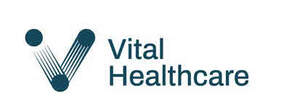
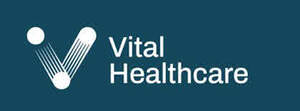

Trade Mark Journal No.2025/049 5 December 2025
UK00004295898 17 November 2025 (10,35,44)
Mark 1

Mark 2
Mark 3
Mark 4

- Class 10
- Medical apparatus and devices; surgical apparatus; surgical and medical instruments; medical imaging apparatus; radiological apparatus; radiological apparatus for diagnostic and medical purposes; radiation oncology instruments for medical use; scanners for medical diagnosis; testing apparatus; testing probes for medical diagnostic purposes; blood pressure monitors; blood testing apparatus; surgical and wound treating equipment; medical tubing; surgical tubing for use in wound drainage; suction apparatus for medical use; wound suction apparatus; suction tubes for medical purposes; suction bottles for medical use; suction drainage sets for medical use; suction bags for medical use; suction bag holders for medical use; wound closures; medical cutting devices; needles; hypodermic needles; hypodermic syringes; hypodermic needles for use in wound drainage; hypodermic needles for use in infusion therapy; cannulas; morcellators; syringes; urethral syringes; injection syringes; flexible tubes, surgical bougies; surgical apparatus for use in lithotripsy; surgical apparatus for use in papillotomy; surgical apparatus for use in laparoscopic procedures; pouches and bags for use in laparoscopic or endoscopic surgical procedures; liners and filters for medical purposes; medical electrodes; cardiac defibrillation electrodes; electrocardiograph equipment; medical apparatus for use in endoscopy; medical apparatus for use in endoscopy ultrasound; medical apparatus for use in sphincterotomy; stone extraction balloons; stone extraction baskets; medical apparatus for use in mechanical lithotripsy; short-track wires; hemostatis fibrin needles; hemostatis injection needles; hemostatis clip-system; hemostatis multiband litigator; medical apparatus for use in cytology; medical aids for stoma care; stoma bags, washers and protectors; catheters; catheter sets; dilatation catheters; balloon catheters; balloon inflating devices for balloon dilation catheters; ureter catheters; suprapubic catheters; urethral catheters; nephrostomy sets; urological instruments; incontinence aids; stents; medical stents; ureter supports; implantable urethral stents; ureteral stents being surgical support; billiary and pseudo-cyst drainage sets; pancreatic stents and stent sets; self-expanding metal stents; medical apparatus for use in gastroentology; endoscopes; instruments for use in gastrointestinal surgery; medical and surgical laparoscopes; laryngoscopes; bronchoscopes; stethoscopes; cardio-pulmonary diagnostic instrumentation; cardiac stimulators; resuscitation apparatus; intracardiac catheters; nerve muscle stimulators; polypectomy snares; infusion pumps; infusion valves; infusion bags; infusion tubes; intravenous administration instruments for medical use; intravenous bags; intravenous catheters; blood transfusion apparatus; blood pumps; inhalers; spacers for inhalers; respiratory therapy instruments; respirators for medical purposes; laryngeal masks; tracheal tubes; endotracheal tubes; endobronchial tubes; endobronchial needles; nasal aspirators; aspiration tubing; aspiration syringes; artificial larynx implants; hemostatic instruments; hemostatic devices; drainage systems and cystoscopes; compression bandages; suture and wound closing materials and products; suture sets; suture materials; medical knives; surgical caps; medical scissors; medical spatulas; medical bags designed to hold medical instruments; hammers for medical or surgical use; protective visors for medical use; forceps for medical use; surgical forceps; biopsy forceps; lithotomy forceps; obstetric forceps; spray catheters; gynaecological apparatus and instruments; pessaries; proctological apparatus and instruments; contraceptive devices; vaginal specula; cervical dilators; urine testing instruments for medical diagnostic purposes; urine bags; urine drainage bags; urine test glasses; medical trays; needles for medical use; tweezers for medical use; medical guidewires; hydrophilic guide wire to track catheters; prostheses for medical treatment; apparatus for the safe and hygienic collection of vomit; fecal pouches; walking aids for medical purposes; orthopedic articles; boots for medical purposes; compression garments and supports; clothing, headgear and footwear for medical personnel and patients; personal protective equipment for medical use; clothing for medical use; gloves for medical use; surgical gloves; patient examination gowns; x-ray gowns; surgical gowns; isolation gowns; nurses’ gowns; surgical masks; surgical caps; face shields and masks for surgical and medical use; infection prevention and control apparatus; medical hosiery; containers for medical waste; fluid collection containers for medical use; brushes for cleaning body cavities; smoke evacuation apparatus for medical use; isolation room equipment and apparatus; medical examination tables; hospital examination chairs; medical trolley covers; bedding for medical use; bed sheets for medical purposes; pillow cases for medical purposes; clinical sheets; cot sheets for medical purposes; curtains for medical use; lighting for medical use; lighting apparatus for medical use; medical examination lamps; parts and fittings for all the aforesaid goods.
- Class 35
- Procurement services in the fields of medical devices, surgical devices, theatre packs; inventory management in the fields of medical devices, surgical devices, theatre packs; inventory management for others; inventory management in the field of medical devices, surgical devices, theatre packs; business consulting and marketing consulting services in the field of medical devices, surgical devices, theatre packs; business advice and analysis of markets in the fields of medical devices, surgical devices, theatre packs; retail and wholesale services in relation to non-medicated cosmetics and toiletry preparations, body creams, body lotions, body scrubs, body emulsions, facial creams, facial emulsions, facial cleansers, facial moisturisers, facial serums, facial masks, hair lotions, hair styling lotions, hair colouring lotions, hair cosmetics, hair moisturisers, hair shampoos, hair conditioners, collagen preparations for cosmetic application, moist wipes for sanitary and cosmetic purposes, face wipes, baby wipes, wipes incorporating cleaning preparations, feminine hygiene cleansing towlettes, cotton wool in the form of wipes for cosmetic use, pre-moistened cosmetic tissues, cleaning preparations, cleaning fluids, cleaning sprays, hand cleansers, hand soap, hand washes, hand gels, hand creams, refill packs for hand soap dispensers, pharmaceutical preparations, dietary supplements, medicated cosmetic and toiletry preparations, dietetic substances adapted for medical use, dermatological pharmaceutical products, dermatological preparations, medical and home care products, medical diagnostic reagents, antibiotics, pharmaceutical preparations for the treatment of immune system related diseases and disorders, pharmaceutical products for treating rheumatological diseases, preparations for the relief of symptoms of colds, influenza and allergies, dietary supplements in powder form, capsules for medicines, empty capsules for pharmaceuticals, gelatin capsules for pharmaceuticals, multivitamin preparations, vitamin tablets, zinc dietary supplements, protein supplements, appetite suppressant pills, anti-oxidant supplements, fish oil for medical purposes, electrolyte replenishment preparations, food for babies, hormones for medical purposes, chemical contraceptives, antibiotic tablets, allergy medications, allergy tablets, cough tablets, effervescent vitamin tablets, analgesics, effervescent analgesic pharmaceutical preparations, vitamin and mineral preparations, vitamin and mineral supplements, vitamin and mineral drinks, vitamin drops, herbal medicine, herbal supplements, herbal beverages for medicinal use, medicinal herb extracts, medicated candy, gummy vitamins, medicated gummies, topical gels for medical and therapeutic use, laxatives, sanitary preparations for medical purposes, pharmaceutical preparations and substances for use in urology, hygienic gels, jellies and lubricants for medical use, preparations for use in the area of the vagina or uterus, pregnancy tests, sanitary pads, sanitary tampons, sanitary towels, sanitising wipes, wipes for medical use, cleaning cloths for medical use, wipes for hygienic (cleaning) purposes, other than impregnated with cleaning preparations, wipes for hygienic (medical) purposes, wipes for hygienic (surgical) purposes, absorbent sanitary articles, absorbent cotton, absorbent wadding, disinfectant soap, disinfecting handwash, fabric deodorisers, first aid kits (filled), material for stopping teeth, dental wax, disinfectants and antiseptics, preparations for destroying vermin, fungicides, herbicides, medical dressings, coverings and applicators, plasters, materials for dressings, disinfectants, antibacterial sprays, antiseptics, antibacterial wipes, medicated swabs, cotton swabs for medical use, anti-viral agents, vaccines, anti-emetics used for treating nausea and vomiting, preparations for the treatment of addiction, sterilising agents, haemodialysis and renal replacement therapy fluids, pain relief medication, pain relief preparations, gases for medical use, gases for dental use, gas mixtures for medical use, oxygen for medical use, gas mixtures containing oxygen for medical use, oxygen cylinder, filled, for medical purposes, kits comprising the aforementioned goods, metal containers for storage or transport, fuel cans of metal, containers for the storage of gas fuel and liquefied gas fuel gases, gas storage tanks of metal, gas bottles of metal, containers made of metal for use in the storage of gases, containers of metal for compressed gas, metallic pressurised gas cylinders, cylinders of metal for gas, medical apparatus and devices, surgical apparatus, surgical and medical instruments, medical imaging apparatus, radiological apparatus, radiological apparatus for diagnostic and medical purposes, radiation oncology instruments for medical use, scanners for medical diagnosis, testing apparatus, testing probes for medical apparatus purposes, blood pressure monitors, blood testing apparatus, surgical and wound treating equipment, medical tubing, surgical tubing for use in wound drainage, suction apparatus for medical use, wound suction apparatus, suction tubes for medical purposes, suction bottles for medical use, suction drainage sets for medical use, suction bags for medical use, suction bag holders for medical use, wound closures, medical cutting devices, needles, hypodermic needles, hypodermic syringes, hypodermic needles for use in wound drainage, hypodermic needles for use in infusion therapy, cannulas, morcellators, syringes, urethral syringes, injection syringes, flexible tubes, surgical bougies, surgical apparatus for use in lithotripsy, surgical apparatus for use in papillotomy, surgical apparatus for use in laparoscopic procedures, pouches and bags for use in laparoscopic or endoscopic surgical procedures, liners and filters for medical purposes, medical electrodes, cardiac defibrillation electrodes, electrocardiograph equipment, medical apparatus for use in endoscopy, medical apparatus for use in endoscopy ultrasound, medical apparatus for use in sphincterotomy, stone extraction balloons, stone extraction baskets, medical apparatus for use in mechanical lithotripsy, short-track wires, hemostatis fibrin needles, hemostatis injection needles, hemostatis clip-system, hemostatis multiband litigator, medical apparatus for use in cytology, medical aids for stoma care, stoma bags, washers and protectors, catheters, catheter sets, dilatation catheters, balloon catheters, balloon inflating devices for balloon dilation catheters, ureter catheters, suprapubic catheters, urethral catheters, nephrostomy sets, urological instruments, incontinence aids, stents, medical stents, ureter supports, implantable urethral stents, ureteral stents being surgical support, billiary and pseudo-cyst drainage sets, pancreatic stents and stent sets, self-expanding metal stents, medical apparatus for use in gastroentology, endoscopes, instruments for use in gastrointestinal surgery, medical and surgical laparoscopes, laryngoscopes, bronchoscopes, stethoscopes, cardio-pulmonary diagnostic instrumentation, cardiac stimulators, resuscitation apparatus, intracardiac catheters, nerve muscle stimulators, polypectomy snares, infusion pumps, infusion valves, infusion bags, infusion tubes, intravenous administration instruments for medical use, intravenous bags, intravenous catheters, blood transfusion apparatus, blood pumps, inhalers, spacers for inhalers, respiratory therapy instruments, respirators for medical purposes, laryngeal masks, tracheal tubes, endotracheal tubes, endobronchial tubes, endobronchial needles, nasal aspirators, aspiration tubing, aspiration syringes, artificial larynx implants, hemostatic instruments, hemostatic devices, drainage systems and cystoscopes, compression bandages, suture and wound closing materials and products, suture sets, suture materials, medical knives, surgical caps, medical scissors, medical spatulas, medical bags designed to hold medical instruments, hammers for medical or surgical use, protective visors for medical use, forceps for medical use, surgical forceps, biopsy forceps, lithotomy forceps, obstetric forceps, gynaecological apparatus and instruments, pessaries, proctological apparatus and instruments, contraceptive devices, vaginal specula, cervical dilators, urine testing instruments for medical diagnostic purposes, urine bags, urine drainage bags, urine test glasses, medical trays, needles for medical use, tweezers for medical use, medical guidewires, hydrophilic guide wires to track catheters, prostheses for medical treatment, apparatus for the safe and hygienic collection of vomit, fecal pouches, walking aids for medical purposes, orthopedic articles, boots for medical purposes, compression garments and supports, clothing, headgear and footwear for medical personnel and patients, personal protective equipment for medical use, clothing for medical use, gloves for medical use, surgical gloves, patient examination gowns, x-ray gowns, surgical gowns, isolation gowns, nurses’ gowns, surgical masks, surgical caps, face shields and masks for surgical and medical use, infection prevention and control apparatus, laboratory apparatus and equipment, medical hosiery, containers for medical waste, fluid collection containers for medical use, brushes for cleaning body cavities, smoke evacuation apparatus for medical use, isolation room equipment and apparatus, medical trolley covers, medical examination tables, hospital examination chairs, bedding for medical use, bed sheets for medical purposes, pillow cases for medical purposes, clinical sheets, cot sheets for medical purposes, curtains for medical use, lighting, lights, desk lights, desk lamps, light fixtures, light bulbs, head torches, lamp stands, wall lamps, lighting for medical use, lighting apparatus for medical use, medical examination lamps, skin marker pens, paper bags for use in the sterilisation of medical instruments, paper for medical examination tables, tissue paper, refrigerators, cooling apparatus and freezers for medical storage purposes, trolleys, medical trolleys, wheeled cabinets for transporting medical supplies, wheelchairs, hospital carts for dispensing medications, bins, pedal bins, rubbish bags, non-slip mats, furniture, seating furniture, office furniture, chairs, stools, desks, tables, cabinets, screens, skin marker pens, paper bags for use in the sterilisation of medical instruments, paper for medical examination tables, tissue paper, parts and fittings for the aforesaid goods; online retail and online wholesale services in relation to non-medicated cosmetics and toiletry preparations, body creams, body lotions, body scrubs, body emulsions, facial creams, facial emulsions, facial cleansers, facial moisturisers, facial serums, facial masks, hair lotions, hair styling lotions, hair colouring lotions, hair cosmetics, hair moisturisers, hair shampoos, hair conditioners, collagen preparations for cosmetic application, moist wipes for sanitary and cosmetic purposes, face wipes, baby wipes, wipes incorporating cleaning preparations, feminine hygiene cleansing towlettes, cotton wool in the form of wipes for cosmetic use, pre-moistened cosmetic tissues, cleaning preparations, cleaning fluids, cleaning sprays, hand cleansers, hand soap, hand washes, hand gels, hand creams, refill packs for hand soap dispensers, pharmaceutical preparations, dietary supplements, medicated cosmetic and toiletry preparations, dietetic substances adapted for medical use, dermatological pharmaceutical products, dermatological preparations, medical and home care products, medical diagnostic reagents, antibiotics, pharmaceutical preparations for the treatment of immune system related diseases and disorders, pharmaceutical products for treating rheumatological diseases, preparations for the relief of symptoms of colds, influenza and allergies, dietary supplements in powder form, capsules for medicines, empty capsules for pharmaceuticals, gelatin capsules for pharmaceuticals, multivitamin preparations, vitamin tablets, zinc dietary supplements, protein supplements, appetite suppressant pills, anti-oxidant supplements, fish oil for medical purposes, electrolyte replenishment preparations, food for babies, hormones for medical purposes, chemical contraceptives, antibiotic tablets, allergy medications, allergy tablets, cough tablets, effervescent vitamin tablets, analgesics, effervescent analgesic pharmaceutical preparations, vitamin and mineral preparations, vitamin and mineral supplements, vitamin and mineral drinks, vitamin drops, herbal medicine, herbal supplements, herbal beverages for medicinal use, medicinal herb extracts, medicated candy, gummy vitamins, medicated gummies, topical gels for medical and therapeutic use, laxatives, sanitary preparations for medical purposes, pharmaceutical preparations and substances for use in urology, hygienic gels, jellies and lubricants for medical use, preparations for use in the area of the vagina or uterus, pregnancy tests, sanitary pads, sanitary tampons, sanitary towels, sanitising wipes, wipes for medical use, cleaning cloths for medical use, wipes for hygienic (cleaning) purposes, other than impregnated with cleaning preparations, wipes for hygienic (medical) purposes, wipes for hygienic (surgical) purposes, absorbent sanitary articles, absorbent cotton, absorbent wadding, disinfectant soap, disinfecting handwash, fabric deodorisers, first aid kits (filled), material for stopping teeth, dental wax, disinfectants and antiseptics, preparations for destroying vermin, fungicides, herbicides, medical dressings, coverings and applicators, plasters, materials for dressings, disinfectants, antibacterial sprays, antiseptics, antibacterial wipes, medicated swabs, cotton swabs for medical use, anti-viral agents, vaccines, anti-emetics used for treating nausea and vomiting, preparations for the treatment of addiction, sterilising agents, haemodialysis and renal replacement therapy fluids, pain relief medication, pain relief preparations, gases for medical use, gases for dental use, gas mixtures for medical use, oxygen for medical use, gas mixtures containing oxygen for medical use, oxygen cylinder, filled, for medical purposes, kits comprising the aforementioned goods, metal containers for storage or transport, fuel cans of metal, containers for the storage of gas fuel and liquefied gas fuel gases, gas storage tanks of metal, gas bottles of metal, containers made of metal for use in the storage of gases, containers of metal for compressed gas, metallic pressurised gas cylinders, cylinders of metal for gas, medical apparatus and devices, surgical apparatus, surgical and medical instruments, medical imaging apparatus, radiological apparatus, radiological apparatus for diagnostic and medical purposes, radiation oncology instruments for medical use, scanners for medical diagnosis, testing apparatus, testing probes for medical apparatus purposes, blood pressure monitors, blood testing apparatus, surgical and wound treating equipment, medical tubing, surgical tubing for use in wound drainage, suction apparatus for medical use, wound suction apparatus, suction tubes for medical purposes, suction bottles for medical use, suction drainage sets for medical use, suction bags for medical use, suction bag holders for medical use, wound closures, medical cutting devices, needles, hypodermic needles, hypodermic syringes, hypodermic needles for use in wound drainage, hypodermic needles for use in infusion therapy, cannulas, morcellators, syringes, urethral syringes, injection syringes, flexible tubes, surgical bougies, surgical apparatus for use in lithotripsy, surgical apparatus for use in papillotomy, surgical apparatus for use in laparoscopic procedures, pouches and bags for use in laparoscopic or endoscopic surgical procedures, liners and filters for medical purposes, medical electrodes, cardiac defibrillation electrodes, electrocardiograph equipment, medical apparatus for use in endoscopy, medical apparatus for use in endoscopy ultrasound, medical apparatus for use in sphincterotomy, stone extraction balloons, stone extraction baskets, medical apparatus for use in mechanical lithotripsy, short-track wires, hemostatis fibrin needles, hemostatis injection needles, hemostatis clip-system, hemostatis multiband litigator, medical apparatus for use in cytology, medical aids for stoma care, stoma bags, washers and protectors, catheters, catheter sets, dilatation catheters, balloon catheters, balloon inflating devices for balloon dilation catheters, ureter catheters, suprapubic catheters, urethral catheters, nephrostomy sets, urological instruments, incontinence aids, stents, medical stents, ureter supports, implantable urethral stents, ureteral stents being surgical support, billiary and pseudo-cyst drainage sets, pancreatic stents and stent sets, self-expanding metal stents, medical apparatus for use in gastroentology, endoscopes, instruments for use in gastrointestinal surgery, medical and surgical laparoscopes, laryngoscopes, bronchoscopes, stethoscopes, cardio-pulmonary diagnostic instrumentation, cardiac stimulators, resuscitation apparatus, intracardiac catheters, nerve muscle stimulators, polypectomy snares, infusion pumps, infusion valves, infusion bags, infusion tubes, intravenous administration instruments for medical use, intravenous bags, intravenous catheters, blood transfusion apparatus, blood pumps, inhalers, spacers for inhalers, respiratory therapy instruments, respirators for medical purposes, laryngeal masks, tracheal tubes, endotracheal tubes, endobronchial tubes, endobronchial needles, nasal aspirators, aspiration tubing, aspiration syringes, artificial larynx implants, hemostatic instruments, hemostatic devices, drainage systems and cystoscopes, compression bandages, suture and wound closing materials and products, suture sets, suture materials, medical knives, surgical caps, medical scissors, medical spatulas, medical bags designed to hold medical instruments, hammers for medical or surgical use, protective visors for medical use, forceps for medical use, surgical forceps, biopsy forceps, lithotomy forceps, obstetric forceps, gynaecological apparatus and instruments, pessaries, proctological apparatus and instruments, contraceptive devices, vaginal specula, cervical dilators, urine testing instruments for medical diagnostic purposes, urine bags, urine drainage bags, urine test glasses, medical trays, needles for medical use, tweezers for medical use, medical guidewires, hydrophilic guide wires to track catheters, prostheses for medical treatment, apparatus for the safe and hygienic collection of vomit, fecal pouches, walking aids for medical purposes, orthopedic articles, boots for medical purposes, compression garments and supports, clothing, headgear and footwear for medical personnel and patients, personal protective equipment for medical use, clothing for medical use, gloves for medical use, surgical gloves, patient examination gowns, x-ray gowns, surgical gowns, isolation gowns, nurses’ gowns, surgical masks, surgical caps, face shields and masks for surgical and medical use, infection prevention and control apparatus, laboratory apparatus and equipment, medical hosiery, containers for medical waste, fluid collection containers for medical use, brushes for cleaning body cavities, smoke evacuation apparatus for medical use, isolation room equipment and apparatus, medical trolley covers, medical examination tables, hospital examination chairs, bedding for medical use, bed sheets for medical purposes, pillow cases for medical purposes, clinical sheets, cot sheets for medical purposes, curtains for medical use, lighting, lights, desk lights, desk lamps, light fixtures, light bulbs, head torches, lamp stands, wall lamps, lighting for medical use, lighting apparatus for medical use, medical examination lamps, skin marker pens, paper bags for use in the sterilisation of medical instruments, paper for medical examination tables, tissue paper, refrigerators, cooling apparatus and freezers for medical storage purposes, trolleys, medical trolleys, wheeled cabinets for transporting medical supplies, wheelchairs, hospital carts for dispensing medications, bins, pedal bins, rubbish bags, non-slip mats, furniture, seating furniture, office furniture, chairs, stools, desks, tables, cabinets, screens, skin marker pens, paper bags for use in the sterilisation of medical instruments, paper for medical examination tables, tissue paper, parts and fittings for the aforesaid goods; information, advisory and consultancy services in relation to all of the aforementioned services.
- Class 44
- Medical services; healthcare services; pharmacy services; provision of health information; medical analysis services; advisory services relating to medical and surgical apparatus, equipment and instruments; hiring of medical and surgical apparatus, equipment and instruments; consultancy services relating to health care, medicine or surgery; technical consultancy services relating to medical health; health risk assessment surveys; infection control audits; medical diagnostic services; surgical diagnostic services; rental of medical equipment; leasing of medical equipment; information, advisory and consultancy services relating to the aforementioned services.
VITAL HEALTHCARE GROUP LIMITED
Representative: Wilson Gunn